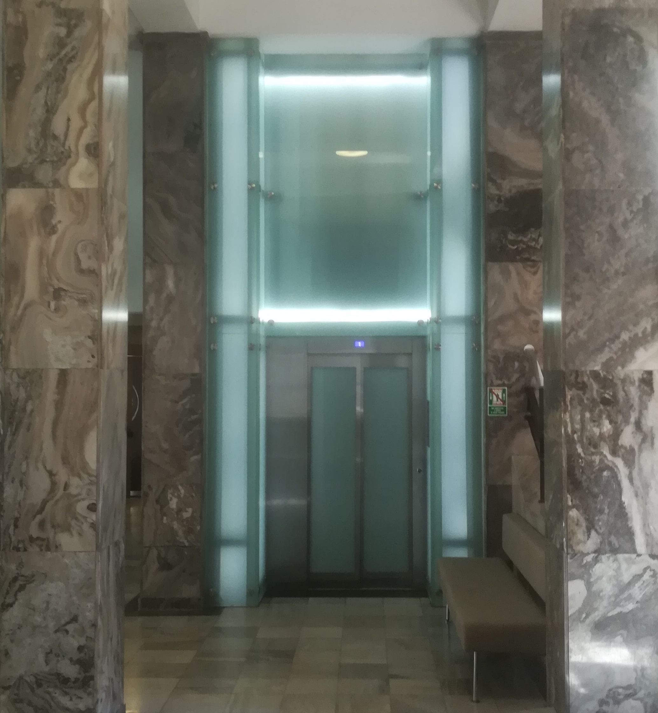
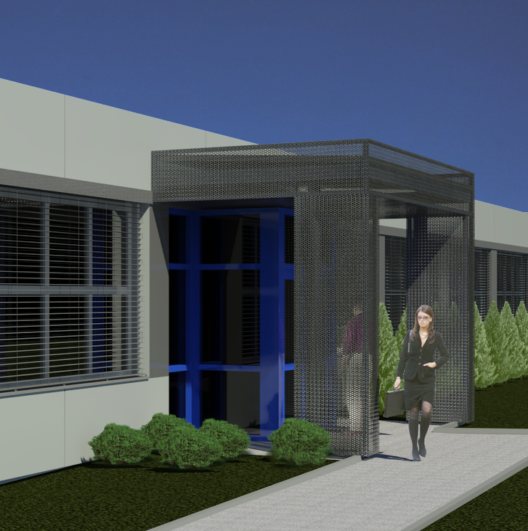
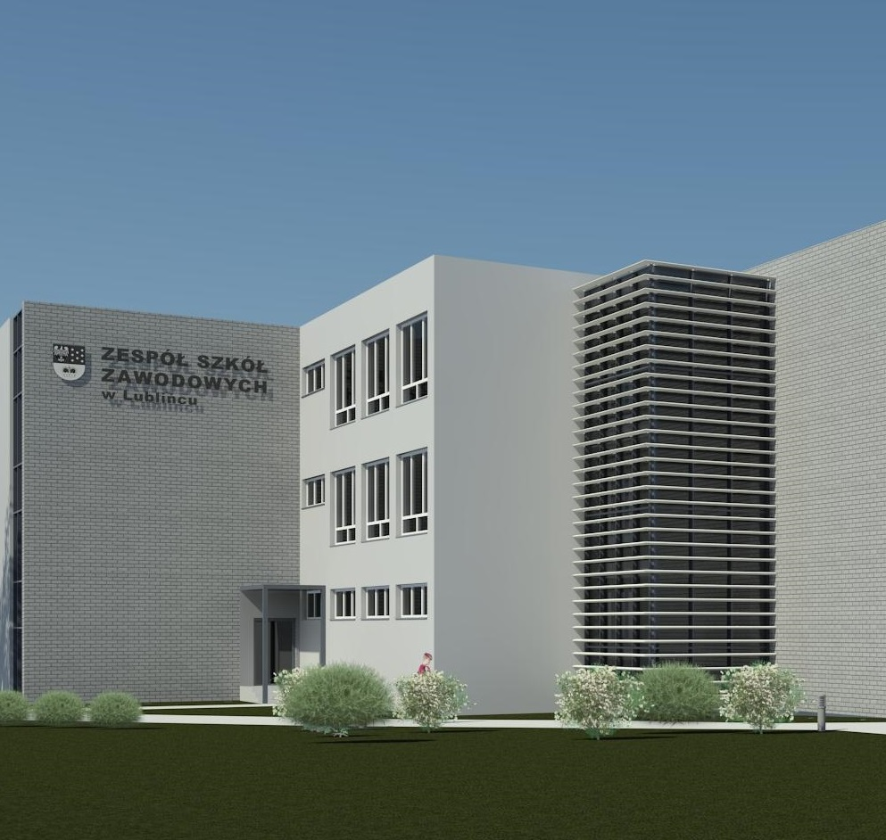
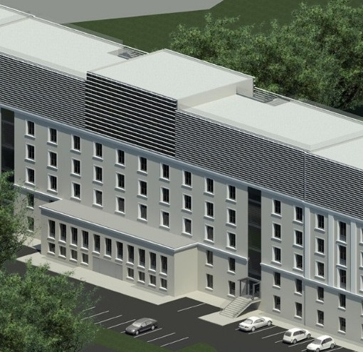
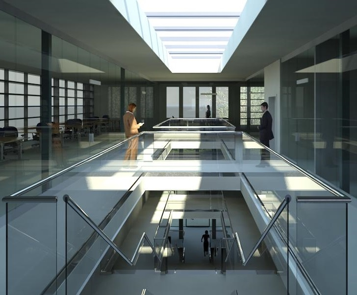
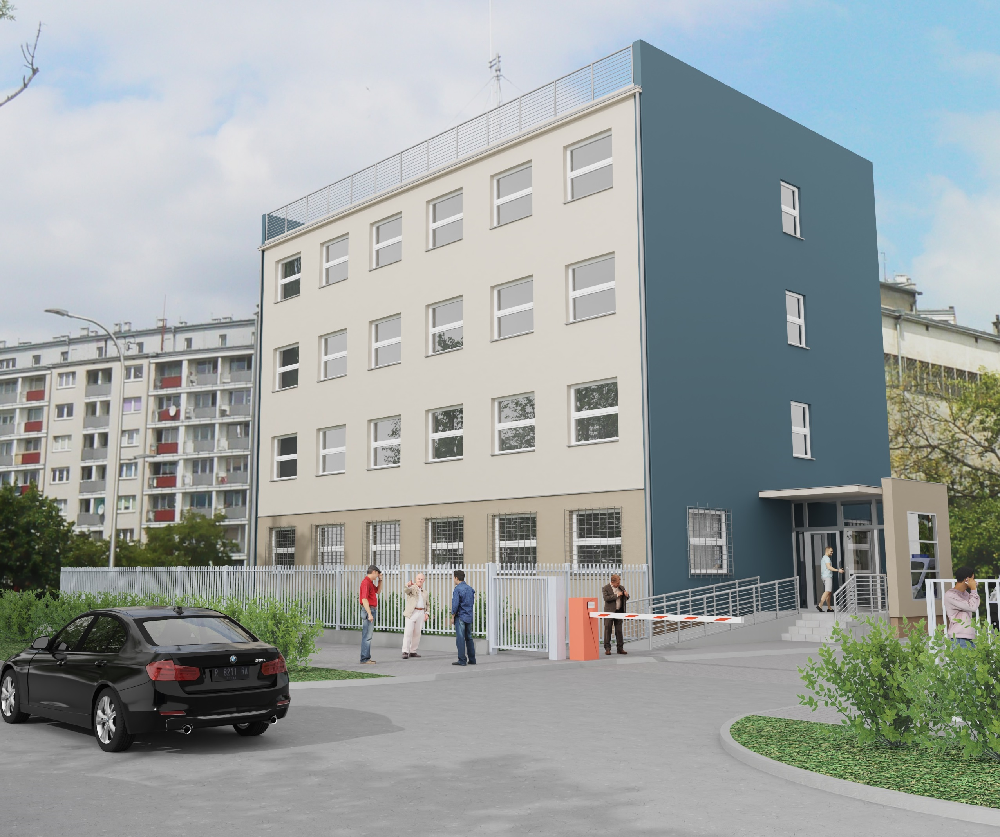

Pracownia
Projekty i realizacje
Konkursy - Nagrody i wyróżnienia
Organizacja Konkursów
Kontakt
KONKURSY - NAGRODY I WYRÓŻNIENIA

Projekt Centrum Biblioteczno - Kulturalnego "Fama" na Psim Polu we Wrocławiu. Otwarty ogólnopolski konkurs architektoniczny SARP 2013r. II nagroda. 2013r. 1

Centralne Biuro Obsługi Klienta Rejonu Energetycznego w Opolu 1999r. Konkurs architektoniczny. I nagroda. 2

Rozbudowa Muzeum Śląska Opolskiego w Opolu. Otwarty ogólnopolski konkurs architektoniczny SARP 2004r. 3

Przebudowa Placu Kopernika w Opolu. Otwarty ogólnopolski konkurs architektoniczny SARP 2002r. III nagroda. 4

Zagospodarowanie placu Wolności w Opolu 1995r. Konkurs architektoniczny SARP. 5
Rozbudowa budynku Prokuratury Okręgowej w Opolu 2002r. 6
Siedziba Sądu Rejonowego w Nysie. Otwarty ogólnopolski konkurs architektoniczny SARP 2013r. 7
Rozbudowa szkoły podstawowej w Tułowicach - biblioteka szkolna i stołówka z zapleczem 2001r. Kon-kurs architektoniczny. I nagroda 8

Adaptacja byłej stołówki Urzędu Wojewódzkiego na Centrum Szkoleniowo-Konferencyjne Województwa Opolskiego. Otwarty ogólnopolski konkurs architektoniczny SARP 2001r. Wyróżnienie II stopnia. MARSZAŁKOWSKI???????????
Konkurs "Wielkich Marzycieli" Gdańsk 1995r. organizowany przez Autodesk Inc. I nagroda. 10